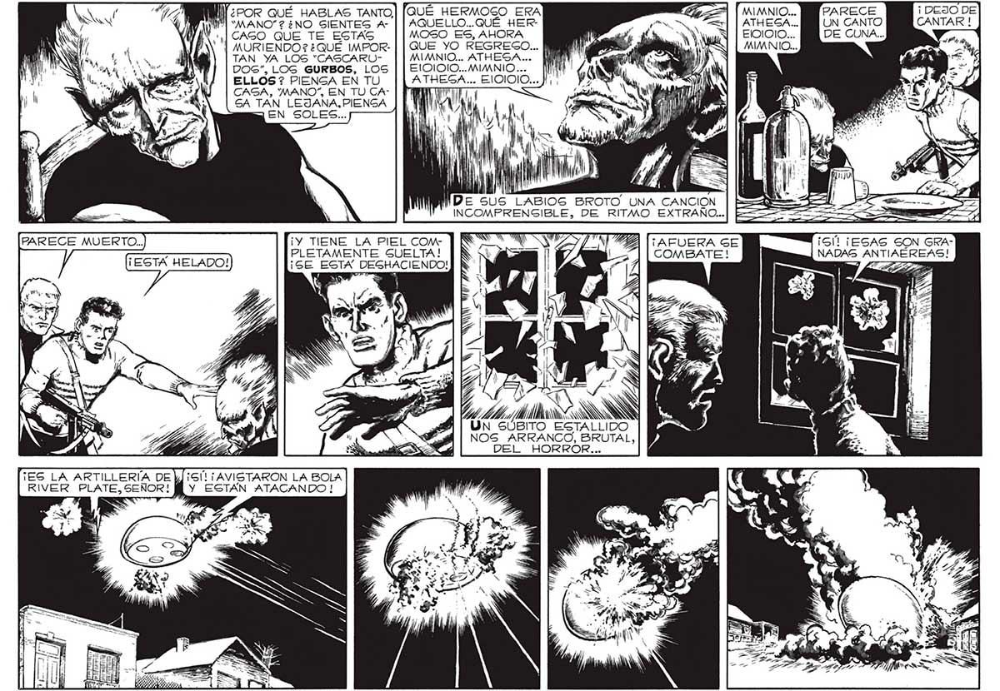

QUE HERMOSO ERA E | TMIMNIO... PARECE ¡ 175 WT“ MANO"? ¿NO SIENTES A- | | AQUELLO...QUÉ HER- ANS <=| | ATHESA... UN CANTO “CASO QUE TE ESTÁS MOSO ES, AHORA y | WO Nu EINNIOIO... DE CUNA... | MURIENDO? ¿QUÉ IMPOR- | | QUE YO REGRECGO... | A. A NE | MIMANIO... TAN YA LOS “CASCARU- MIMNIO... ATHESA... e EA DOS”, LOG GURBOS, LOS ElOIOIO... MIMNIO... ELLOS ? PIENGA EN TU mr EJOIOIO... +. CAGA, “MANO”, EN TU CA- ANDAN ÚN qe | 1 GA TAN LEJANA, PIENGA | | AY A 5 EN SOLES... AN Mv ) l Al O 2 Se LE a ) r == PAT .— ll $ WI De 5Us LABIOS BROTO UNA gL INCOMPRENSIBLE, DE RITMO EXTRAÑO... PARECE MUERTO.. ¡Y TIENE LA PIEL COM ]NS yA YA | AFUERA SE E . PLETAMENTE SUELTA! ¡G' ¡ESAS SON GRA! y COMBATE! NADAS ANTIAÉREAS! ¡EGTÁ HELADO! ¡GE ESTA DEGHACIENDO!] | | SIN te e da a O NN BITO ESTALLIDO NOS” ARRÁNCO, lo DEL _ HORROR.. yl ¡S'L¡ AVISTARON LA BOLA Y ESTÁN ATACANDO !
